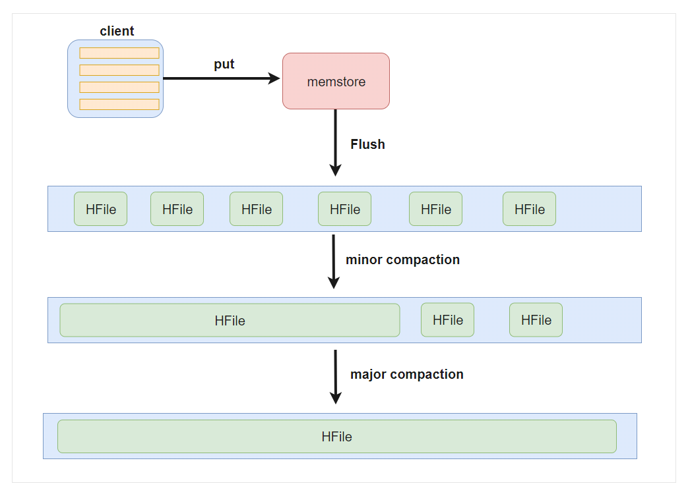
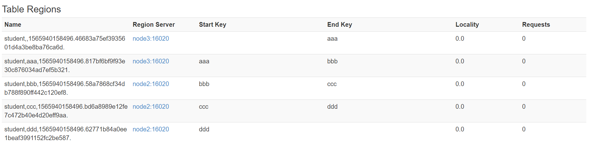
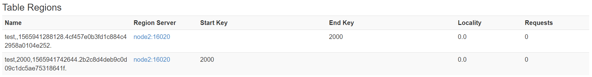
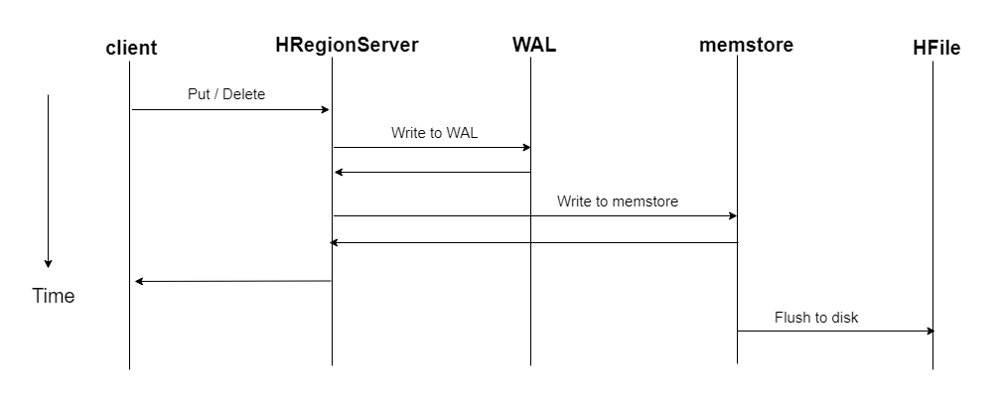
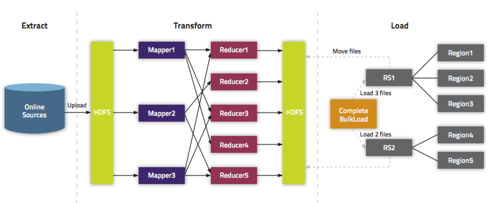
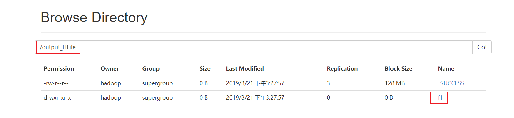
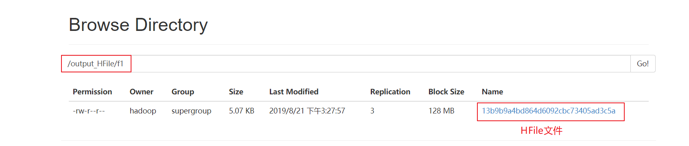

大数据数据库之hbase
1. HBase的数据存储原理


- 一个HRegionServer会负责管理很多个region
- 一个==region==包含很多个==store==
- 一个==列族==就划分成一个==store==
- 如果一个表中只有1个列族，那么每一个region中只有一个store
- 如果一个表中有N个列族，那么每一个region中有N个store
- ==一个store==里面只有==一个memstore==
- memstore是一块内存区域，写入的数据会先写入memstore进行缓冲，然后再把数据刷到磁盘
- 一个store里面有很多个==StoreFile==, 最后数据是以很多个==HFile==这种数据结构的文件保存在HDFS上
- StoreFile是HFile的抽象对象，如果说到StoreFile就等于HFile
- ==每次memstore刷写数据到磁盘，就生成对应的一个新的HFile文件出来==

2. HBase读数据流程

说明：HBase集群，只有一张meta表，此表只有一个region，该region数据保存在一个HRegionServer上
- 1、客户端首先与zk进行连接；从zk找到meta表的region位置，即meta表的数据存储在某一HRegionServer上；客户端与此HRegionServer建立连接，然后读取meta表中的数据；meta表中存储了所有用户表的region信息，我们可以通过
scan 'hbase:meta'来查看meta表信息 - 2、根据要查询的namespace、表名和rowkey信息。找到写入数据对应的region信息
- 3、找到这个region对应的regionServer，然后发送请求
- 4、查找并定位到对应的region
- 5、先从memstore查找数据，如果没有，再从BlockCache上读取
- HBase上Regionserver的内存分为两个部分
- 一部分作为Memstore，主要用来写；
- 另外一部分作为BlockCache，主要用于读数据；
- HBase上Regionserver的内存分为两个部分
- 6、如果BlockCache中也没有找到，再到StoreFile上进行读取
- 从storeFile中读取到数据之后，不是直接把结果数据返回给客户端，而是把数据先写入到BlockCache中，目的是为了加快后续的查询；然后在返回结果给客户端。
3. HBase写数据流程

- 1、客户端首先从zk找到meta表的region位置，然后读取meta表中的数据，meta表中存储了用户表的region信息
- 2、根据namespace、表名和rowkey信息。找到写入数据对应的region信息
- 3、找到这个region对应的regionServer，然后发送请求
- 4、把数据分别写到HLog（write ahead log）和memstore各一份
- 5、memstore达到阈值后把数据刷到磁盘，生成storeFile文件
- 6、删除HLog中的历史数据
补充：
HLog（write ahead log）：
也称为WAL意为Write ahead log，类似mysql中的binlog,用来做灾难恢复时用，HLog记录数据的所有变更,一旦数据修改，就可以从log中进行恢复。
4. HBase的flush、compact机制

4.1 Flush触发条件
4.1.1 memstore级别限制
- 当Region中任意一个MemStore的大小达到了上限（hbase.hregion.memstore.flush.size，默认128MB），会触发Memstore刷新。
<property>
<name>hbase.hregion.memstore.flush.size</name>
<value>134217728</value>
</property>
4.1.2 region级别限制
- 当Region中所有Memstore的大小总和达到了上限（hbase.hregion.memstore.block.multiplier hbase.hregion.memstore.flush.size，默认 2 128M = 256M），会触发memstore刷新。
<property>
<name>hbase.hregion.memstore.flush.size</name>
<value>134217728</value>
</property>
<property>
<name>hbase.hregion.memstore.block.multiplier</name>
<value>2</value>
</property>
4.1.3 Region Server级别限制
- 当一个Region Server中所有Memstore的大小总和超过低水位阈值hbase.regionserver.global.memstore.size.lower.limit*hbase.regionserver.global.memstore.size（前者默认值0.95），RegionServer开始强制flush；
- 先Flush Memstore最大的Region，再执行次大的，依次执行；
- 如写入速度大于flush写出的速度，导致总MemStore大小超过高水位阈值hbase.regionserver.global.memstore.size（默认为JVM内存的40%），此时RegionServer会阻塞更新并强制执行flush，直到总MemStore大小低于低水位阈值
<property>
<name>hbase.regionserver.global.memstore.size.lower.limit</name>
<value>0.95</value>
</property>
<property>
<name>hbase.regionserver.global.memstore.size</name>
<value>0.4</value>
</property>
4.1.4 HLog数量上限
- 当一个Region Server中HLog数量达到上限（可通过参数hbase.regionserver.maxlogs配置）时，系统会选取最早的一个 HLog对应的一个或多个Region进行flush
4.1.5 定期刷新Memstore
- 默认周期为1小时，确保Memstore不会长时间没有持久化。为避免所有的MemStore在同一时间都进行flush导致的问题，定期的flush操作有20000左右的随机延时。
4.1.6 手动flush
- 用户可以通过shell命令
flush ‘tablename’或者flush ‘region name’分别对一个表或者一个Region进行flush。
4.2 flush的流程
为了减少flush过程对读写的影响，将整个flush过程分为三个阶段：
prepare阶段：遍历当前Region中所有的Memstore，将Memstore中当前数据集CellSkipListSet做一个快照snapshot；然后再新建一个CellSkipListSet。后期写入的数据都会写入新的CellSkipListSet中。prepare阶段需要加一把updateLock对写请求阻塞，结束之后会释放该锁。因为此阶段没有任何费时操作，因此持锁时间很短。
flush阶段：遍历所有Memstore，将prepare阶段生成的snapshot持久化为临时文件，临时文件会统一放到目录.tmp下。这个过程因为涉及到磁盘IO操作，因此相对比较耗时。
- commit阶段：遍历所有Memstore，将flush阶段生成的临时文件移到指定的ColumnFamily目录下，针对HFile生成对应的storefile和Reader，把storefile添加到HStore的storefiles列表中，最后再清空prepare阶段生成的snapshot。
4.3 Compact合并机制
hbase为了==防止小文件过多==，以保证查询效率，hbase需要在必要的时候将这些小的store file合并成相对较大的store file，这个过程就称之为compaction。
在hbase中主要存在两种类型的compaction合并
- ==minor compaction 小合并==
- ==major compaction 大合并==
4.3.1 minor compaction 小合并
在将Store中多个HFile合并为一个HFile
在这个过程中会选取一些小的、相邻的StoreFile将他们合并成一个更大的StoreFile，对于超过了TTL的数据、更新的数据、删除的数据仅仅只是做了标记。并没有进行物理删除，一次Minor Compaction的结果是更少并且更大的StoreFile。这种合并的触发频率很高。
minor compaction触发条件由以下几个参数共同决定：
<!--表示至少需要三个满足条件的store file时，minor compaction才会启动-->
<property>
<name>hbase.hstore.compactionThreshold</name>
<value>3</value>
</property>
<!--表示一次minor compaction中最多选取10个store file-->
<property>
<name>hbase.hstore.compaction.max</name>
<value>10</value>
</property>
<!--默认值为128m,
表示文件大小小于该值的store file 一定会加入到minor compaction的store file中
-->
<property>
<name>hbase.hstore.compaction.min.size</name>
<value>134217728</value>
</property>
<!--默认值为LONG.MAX_VALUE，
表示文件大小大于该值的store file 一定会被minor compaction排除-->
<property>
<name>hbase.hstore.compaction.max.size</name>
<value>9223372036854775807</value>
</property>
4.3.2 major compaction 大合并
合并Store中所有的HFile为一个HFile
将所有的StoreFile合并成一个StoreFile，这个过程还会清理三类无意义数据：被删除的数据、TTL过期数据、版本号超过设定版本号的数据。合并频率比较低，默认7天执行一次，并且性能消耗非常大，建议生产关闭(设置为0)，在应用空闲时间手动触发。一般可以是手动控制进行合并，防止出现在业务高峰期。
major compaction触发时间条件
<!--默认值为7天进行一次大合并，--> <property> <name>hbase.hregion.majorcompaction</name> <value>604800000</value> </property>手动触发
##使用major_compact命令 major_compact tableName
5. region 拆分机制
region中存储的是大量的rowkey数据 ,当region中的数据条数过多的时候,直接影响查询效率.当region过大的时候.hbase会拆分region , 这也是Hbase的一个优点 .
HBase的region split策略一共有以下几种：
1、ConstantSizeRegionSplitPolicy
- 0.94版本前默认切分策略
当region大小大于某个阈值(hbase.hregion.max.filesize=10G)之后就会触发切分，一个region等分为2个region。
- 但是在生产线上这种切分策略却有相当大的弊端：切分策略对于大表和小表没有明显的区分。阈值(hbase.hregion.max.filesize)设置较大对大表比较友好，但是小表就有可能不会触发分裂，极端情况下可能就1个，这对业务来说并不是什么好事。如果设置较小则对小表友好，但一个大表就会在整个集群产生大量的region，这对于集群的管理、资源使用、failover来说都不是一件好事。
2、IncreasingToUpperBoundRegionSplitPolicy
- 0.94版本~2.0版本默认切分策略
切分策略稍微有点复杂，总体看和ConstantSizeRegionSplitPolicy思路相同，一个region大小大于设置阈值就会触发切分。但是这个阈值并不像ConstantSizeRegionSplitPolicy是一个固定的值，而是会在一定条件下不断调整，调整规则和region所属表在当前regionserver上的region个数有关系.
region split的计算公式是：
regioncount^3 128M 2，当region达到该size的时候进行split
例如：
第一次split：1^3 256 = 256MB
第二次split：2^3 256 = 2048MB
第三次split：3^3 256 = 6912MB
第四次split：4^3 256 = 16384MB > 10GB，因此取较小的值10GB
后面每次split的size都是10GB了
3、SteppingSplitPolicy
- 2.0版本默认切分策略
- 这种切分策略的切分阈值又发生了变化，相比 IncreasingToUpperBoundRegionSplitPolicy 简单了一些，依然和待分裂region所属表在当前regionserver上的region个数有关系，如果region个数等于1，
切分阈值为flush size * 2，否则为MaxRegionFileSize。这种切分策略对于大集群中的大表、小表会比 IncreasingToUpperBoundRegionSplitPolicy 更加友好，小表不会再产生大量的小region，而是适可而止。
4、KeyPrefixRegionSplitPolicy
- 根据rowKey的前缀对数据进行分组，这里是指定rowKey的前多少位作为前缀，比如rowKey都是16位的，指定前5位是前缀，那么前5位相同的rowKey在进行region split的时候会分到相同的region中。
5、DelimitedKeyPrefixRegionSplitPolicy
- 保证相同前缀的数据在同一个region中，例如rowKey的格式为：userid_eventtype_eventid，指定的delimiter为 _ ，则split的的时候会确保userid相同的数据在同一个region中。
- 6、DisabledRegionSplitPolicy
- 不启用自动拆分, 需要指定手动拆分
6. HBase表的预分区
- 当一个table刚被创建的时候，Hbase默认的分配一个region给table。也就是说这个时候，所有的读写请求都会访问到同一个regionServer的同一个region中，这个时候就达不到负载均衡的效果了，集群中的其他regionServer就可能会处于比较空闲的状态。
- 解决这个问题可以用pre-splitting,在创建table的时候就配置好，生成多个region。
6.1 为何要预分区？
- 增加数据读写效率
- 负载均衡，防止数据倾斜
- 方便集群容灾调度region
- 优化Map数量
6.2 预分区原理
- 每一个region维护着startRow与endRowKey，如果加入的数据符合某个region维护的rowKey范围，则该数据交给这个region维护。
6.3 手动指定预分区
两种方式
方式一
create 'person','info1','info2',SPLITS => ['1000','2000','3000','4000']

方式二：也可以把分区规则创建于文件中
cd /kfly/doc vim split.txt- 文件内容
aaa bbb ccc ddd- hbase shell中，执行命令
create 'student','info',SPLITS_FILE => '/kfly/install/split.txt'- 成功后查看web界面

6.2.2 HexStringSplit 算法
HexStringSplit会将数据从“00000000”到“FFFFFFFF”之间的数据长度按照n等分之后算出每一段的其实rowkey和结束rowkey，以此作为拆分点。
例如：
create 'mytable', 'base_info',' extra_info', {NUMREGIONS => 15, SPLITALGO => 'HexStringSplit'}

7. region 合并
7.1 region合并说明
- Region的合并不是为了性能, 而是出于维护的目的 .
- 比如删除了大量的数据 ,这个时候每个Region都变得很小 ,存储多个Region就浪费了 ,这个时候可以把Region合并起来，进而可以减少一些Region服务器节点
7.2 如何进行region合并
7.2.1 通过Merge类冷合并Region
执行合并前，==需要先关闭hbase集群==
创建一张hbase表：
create 'test','info1',SPLITS => ['1000','2000','3000']
- 查看表region

需求：
需要把test表中的2个region数据进行合并：
test,,1565940912661.62d28d7d20f18debd2e7dac093bc09d8.
test,1000,1565940912661.5b6f9e8dad3880bcc825826d12e81436.这里通过org.apache.hadoop.hbase.util.Merge类来实现，不需要进入hbase shell，直接执行（==需要先关闭hbase集群==）：
hbase org.apache.hadoop.hbase.util.Merge test test,,1565940912661.62d28d7d20f18debd2e7dac093bc09d8. test,1000,1565940912661.5b6f9e8dad3880bcc825826d12e81436.成功后界面观察

7.2.2 通过online_merge热合并Region
==不需要关闭hbase集群==，在线进行合并
与冷合并不同的是，online_merge的传参是Region的hash值，而Region的hash值就是Region名称的最后那段在两个.之间的字符串部分。
需求：需要把test表中的2个region数据进行合并：
test,2000,1565940912661.c2212a3956b814a6f0d57a90983a8515.
test,3000,1565940912661.553dd4db667814cf2f050561167ca030.需要进入hbase shell：
merge_region 'c2212a3956b814a6f0d57a90983a8515','553dd4db667814cf2f050561167ca030'成功后观察界面

8. HBase集成MapReduce
- HBase表中的数据最终都是存储在HDFS上，HBase天生的支持MR的操作，我们可以通过MR直接处理HBase表中的数据，并且MR可以将处理后的结果直接存储到HBase表中。
8.1 实战一
- 需求：==读取HBase当中myuser这张表的数据，将数据写入到另外一张myuser2表里面去==
第一步：创建myuser2这张hbase表
注意：列族的名字要与myuser表的列族名字相同
hbase(main):010:0> create 'myuser2','f1'
- 第二步：创建maven工程并导入jar包
<repositories>
<repository>
<id>cloudera</id>
<url>https://repository.cloudera.com/artifactory/cloudera-repos/</url>
</repository>
</repositories>
<dependencies>
<dependency>
<groupId>org.apache.hadoop</groupId>
<artifactId>hadoop-client</artifactId>
<version>2.6.0-mr1-cdh5.14.2</version>
</dependency>
<dependency>
<groupId>org.apache.hbase</groupId>
<artifactId>hbase-client</artifactId>
<version>1.2.0-cdh5.14.2</version>
</dependency>
<dependency>
<groupId>org.apache.hbase</groupId>
<artifactId>hbase-server</artifactId>
<version>1.2.0-cdh5.14.2</version>
</dependency>
<dependency>
<groupId>junit</groupId>
<artifactId>junit</artifactId>
<version>4.12</version>
<scope>test</scope>
</dependency>
<dependency>
<groupId>org.testng</groupId>
<artifactId>testng</artifactId>
<version>6.14.3</version>
<scope>test</scope>
</dependency>
</dependencies>
<build>
<plugins>
<plugin>
<groupId>org.apache.maven.plugins</groupId>
<artifactId>maven-compiler-plugin</artifactId>
<version>3.0</version>
<configuration>
<source>1.8</source>
<target>1.8</target>
<encoding>UTF-8</encoding>
<!-- <verbal>true</verbal>-->
</configuration>
</plugin>
<plugin>
<groupId>org.apache.maven.plugins</groupId>
<artifactId>maven-shade-plugin</artifactId>
<version>2.2</version>
<executions>
<execution>
<phase>package</phase>
<goals>
<goal>shade</goal>
</goals>
<configuration>
<filters>
<filter>
<artifact>*:*</artifact>
<excludes>
<exclude>META-INF/*.SF</exclude>
<exclude>META-INF/*.DSA</exclude>
<exclude>META-INF/*/RSA</exclude>
</excludes>
</filter>
</filters>
</configuration>
</execution>
</executions>
</plugin>
</plugins>
</build>
- 第三步：开发MR程序实现功能
package com.kaikeba;
import org.apache.hadoop.conf.Configuration;
import org.apache.hadoop.hbase.Cell;
import org.apache.hadoop.hbase.CellUtil;
import org.apache.hadoop.hbase.TableName;
import org.apache.hadoop.hbase.client.Put;
import org.apache.hadoop.hbase.client.Result;
import org.apache.hadoop.hbase.client.Scan;
import org.apache.hadoop.hbase.io.ImmutableBytesWritable;
import org.apache.hadoop.hbase.mapreduce.TableMapReduceUtil;
import org.apache.hadoop.hbase.mapreduce.TableMapper;
import org.apache.hadoop.hbase.mapreduce.TableReducer;
import org.apache.hadoop.hbase.util.Bytes;
import org.apache.hadoop.io.Text;
import org.apache.hadoop.mapreduce.Job;
import java.io.IOException;
public class HBaseMR {
public static class HBaseMapper extends TableMapper<Text,Put>{
@Override
protected void map(ImmutableBytesWritable key, Result value, Context context) throws IOException, InterruptedException {
//获取rowkey的字节数组
byte[] bytes = key.get();
String rowkey = Bytes.toString(bytes);
//构建一个put对象
Put put = new Put(bytes);
//获取一行中所有的cell对象
Cell[] cells = value.rawCells();
for (Cell cell : cells) {
// f1列族
if("f1".equals(Bytes.toString(CellUtil.cloneFamily(cell)))){
// name列名
if("name".equals(Bytes.toString(CellUtil.cloneQualifier(cell)))){
put.add(cell);
}
// age列名
if("age".equals(Bytes.toString(CellUtil.cloneQualifier(cell)))){
put.add(cell);
}
}
}
if(!put.isEmpty()){
context.write(new Text(rowkey),put);
}
}
}
public static class HbaseReducer extends TableReducer<Text,Put,ImmutableBytesWritable>{
@Override
protected void reduce(Text key, Iterable<Put> values, Context context) throws IOException, InterruptedException {
for (Put put : values) {
context.write(null,put);
}
}
}
public static void main(String[] args) throws IOException, ClassNotFoundException, InterruptedException {
Configuration conf = new Configuration();
Scan scan = new Scan();
Job job = Job.getInstance(conf);
job.setJarByClass(HBaseMR.class);
//使用TableMapReduceUtil 工具类来初始化我们的mapper
TableMapReduceUtil.initTableMapperJob(TableName.valueOf(args[0]),scan,HBaseMapper.class,Text.class,Put.class,job);
//使用TableMapReduceUtil 工具类来初始化我们的reducer
TableMapReduceUtil.initTableReducerJob(args[1],HbaseReducer.class,job);
//设置reduce task个数
job.setNumReduceTasks(1);
System.exit(job.waitForCompletion(true) ? 0 : 1);
}
}
打成jar包提交到集群中运行
hadoop jar hbase_java_api-1.0-SNAPSHOT.jar com.kaikeba.HBaseMR t1 t2
8.2 实战二
需求 读取hdfs上面的数据，写入到hbase表里面去
node03执行以下命令准备数据文件，并将数据文件上传到HDFS上面去
hdfs dfs -mkdir -p /hbase/input cd /kfly/install vim user.txt 0007 zhangsan 18 0008 lisi 25 0009 wangwu 20 将文件上传到hdfs的路径下面去 hdfs dfs -put kflyb/install/user.txt /hbase/input/代码开发
~~~java
package com.kaikeba;
import org.apache.hadoop.conf.Configuration;
import org.apache.hadoop.fs.Path;
import org.apache.hadoop.hbase.client.Put;
import org.apache.hadoop.hbase.io.ImmutableBytesWritable;
import org.apache.hadoop.hbase.mapreduce.TableMapReduceUtil;
import org.apache.hadoop.hbase.mapreduce.TableReducer;
import org.apache.hadoop.hbase.util.Bytes;
import org.apache.hadoop.io.LongWritable;
import org.apache.hadoop.io.NullWritable;
import org.apache.hadoop.io.Text;
import org.apache.hadoop.mapreduce.Job;
import org.apache.hadoop.mapreduce.Mapper;
import org.apache.hadoop.mapreduce.lib.input.TextInputFormat;
import java.io.IOException;
public class Hdfs2Hbase {
public static class HdfsMapper extends Mapper<LongWritable,Text,Text,NullWritable> {
protected void map(LongWritable key, Text value, Context context) throws IOException, InterruptedException {
context.write(value,NullWritable.get());
}
}
public static class HBASEReducer extends TableReducer<Text,NullWritable,ImmutableBytesWritable> {
protected void reduce(Text key, Iterable<NullWritable> values, Context context) throws IOException, InterruptedException {
String[] split = key.toString().split(" ");
Put put = new Put(Bytes.toBytes(split[0]));
put.addColumn("f1".getBytes(),"name".getBytes(),split[1].getBytes());
put.addColumn("f1".getBytes(),"age".getBytes(), split[2].getBytes());
context.write(new ImmutableBytesWritable(Bytes.toBytes(split[0])),put);
}
}
public static void main(String[] args) throws IOException, ClassNotFoundException, InterruptedException {
Configuration conf = new Configuration();
Job job = Job.getInstance(conf);
job.setJarByClass(Hdfs2Hbase.class);
job.setInputFormatClass(TextInputFormat.class);
//输入文件路径
TextInputFormat.addInputPath(job,new Path(args[0]));
job.setMapperClass(HdfsMapper.class);
//map端的输出的key value 类型
job.setMapOutputKeyClass(Text.class);
job.setMapOutputValueClass(NullWritable.class);
//指定输出到hbase的表名
TableMapReduceUtil.initTableReducerJob(args[1],HBASEReducer.class,job);
//设置reduce个数
job.setNumReduceTasks(1);
System.exit(job.waitForCompletion(true)?0:1);
}
}
* 创建hbase表 t3
~~~ruby
create 't3','f1'
- 打成jar包提交到集群中运行
hadoop jar hbase_java_api-1.0-SNAPSHOT.jar com.kaikeba.Hdfs2Hbase /data/user.txt t3
8.3 实战三
需求
- ==通过bulkload的方式批量加载数据到HBase表中==
- ==将我们hdfs上面的这个路径/hbase/input/user.txt的数据文件，转换成HFile格式，然后load到myuser2这张表里面去==
知识点描述
- 加载数据到HBase当中去的方式多种多样，我们可以使用HBase的javaAPI或者使用sqoop将我们的数据写入或者导入到HBase当中去，但是这些方式不是慢就是在导入的过程的占用Region资源导致效率低下
- 我们也可以通过MR的程序，将我们的数据直接转换成HBase的最终存储格式HFile，然后直接load数据到HBase当中去即可
HBase数据正常写流程回顾

bulkload方式的处理示意图

好处
- 导入过程不占用Region资源
- 能快速导入海量的数据
- 节省内存
==1、开发生成HFile文件的代码==
package com.kaikeba;
import org.apache.hadoop.conf.Configuration;
import org.apache.hadoop.fs.Path;
import org.apache.hadoop.hbase.HBaseConfiguration;
import org.apache.hadoop.hbase.TableName;
import org.apache.hadoop.hbase.client.Connection;
import org.apache.hadoop.hbase.client.ConnectionFactory;
import org.apache.hadoop.hbase.client.Put;
import org.apache.hadoop.hbase.client.Table;
import org.apache.hadoop.hbase.io.ImmutableBytesWritable;
import org.apache.hadoop.hbase.mapreduce.HFileOutputFormat2;
import org.apache.hadoop.hbase.util.Bytes;
import org.apache.hadoop.io.LongWritable;
import org.apache.hadoop.io.Text;
import org.apache.hadoop.mapreduce.Job;
import org.apache.hadoop.mapreduce.Mapper;
import org.apache.hadoop.mapreduce.lib.input.FileInputFormat;
import org.apache.hadoop.mapreduce.lib.output.FileOutputFormat;
import java.io.IOException;
public class HBaseLoad {
public static class LoadMapper extends Mapper<LongWritable,Text,ImmutableBytesWritable,Put> {
@Override
protected void map(LongWritable key, Text value, Mapper.Context context) throws IOException, InterruptedException {
String[] split = value.toString().split(" ");
Put put = new Put(Bytes.toBytes(split[0]));
put.addColumn("f1".getBytes(),"name".getBytes(),split[1].getBytes());
put.addColumn("f1".getBytes(),"age".getBytes(), split[2].getBytes());
context.write(new ImmutableBytesWritable(Bytes.toBytes(split[0])),put);
}
}
public static void main(String[] args) throws IOException, ClassNotFoundException, InterruptedException {
final String INPUT_PATH= "hdfs://node01:8020/hbase/input";
final String OUTPUT_PATH= "hdfs://node01:8020/hbase/output_file";
Configuration conf = HBaseConfiguration.create();
Connection connection = ConnectionFactory.createConnection(conf);
Table table = connection.getTable(TableName.valueOf("t4"));
Job job= Job.getInstance(conf);
job.setJarByClass(HBaseLoad.class);
job.setMapperClass(LoadMapper.class);
job.setMapOutputKeyClass(ImmutableBytesWritable.class);
job.setMapOutputValueClass(Put.class);
//指定输出的类型HFileOutputFormat2
job.setOutputFormatClass(HFileOutputFormat2.class);
HFileOutputFormat2.configureIncrementalLoad(job,table,connection.getRegionLocator(TableName.valueOf("t4")));
FileInputFormat.addInputPath(job,new Path(INPUT_PATH));
FileOutputFormat.setOutputPath(job,new Path(OUTPUT_PATH));
System.exit(job.waitForCompletion(true)?0:1);
}
}
- ==2、打成jar包提交到集群中运行==
hadoop jar hbase_java_api-1.0-SNAPSHOT.jar com.kaikeba.HBaseLoad
- ==3、观察HDFS上输出的结果==


==4、加载HFile文件到hbase表中==
- 方式一：代码加载
package com.kaikeba; import org.apache.hadoop.conf.Configuration; import org.apache.hadoop.fs.Path; import org.apache.hadoop.hbase.HBaseConfiguration; import org.apache.hadoop.hbase.TableName; import org.apache.hadoop.hbase.client.Admin; import org.apache.hadoop.hbase.client.Connection; import org.apache.hadoop.hbase.client.ConnectionFactory; import org.apache.hadoop.hbase.client.Table; import org.apache.hadoop.hbase.mapreduce.LoadIncrementalHFiles; public class LoadData { public static void main(String[] args) throws Exception { Configuration configuration = HBaseConfiguration.create(); configuration.set("hbase.zookeeper.quorum", "node01,node02,node03"); //获取数据库连接 Connection connection = ConnectionFactory.createConnection(configuration); //获取表的管理器对象 Admin admin = connection.getAdmin(); //获取table对象 TableName tableName = TableName.valueOf("t4"); Table table = connection.getTable(tableName); //构建LoadIncrementalHFiles加载HFile文件 LoadIncrementalHFiles load = new LoadIncrementalHFiles(configuration); load.doBulkLoad(new Path("hdfs://node01:8020/hbase/output_file"), admin,table,connection.getRegionLocator(tableName)); } }- 方式二：命令加载
先将hbase的jar包添加到hadoop的classpath路径下
先将hbase的jar包添加到hadoop的classpath路径下 export HBASE_HOME=/kfly/install/hbase-1.2.0-cdh5.14.2/ export HADOOP_HOME=/kfly/install/hadoop-2.6.0/ export HADOOP_CLASSPATH=`${HBASE_HOME}/bin/hbase mapredcp`
运行命令
yarn jar /kfly/install/hbase-1.2.0-cdh5.14.2/lib/hbase-server-1.2.0-cdh5.14.2.jar completebulkload /hbase/output_hfile myuser2
8. HBase集成Hive
- Hive提供了与HBase的集成，使得能够在HBase表上使用hive sql 语句进行查询、插入操作以及进行Join和Union等复杂查询，同时也可以将hive表中的数据映射到Hbase中
8.1 HBase与Hive的对比（
8.1.1 Hive
数据仓库
Hive的本质其实就相当于将HDFS中已经存储的文件在Mysql中做了一个双射关系，以方便使用HQL去管理查询。
用于数据分析、清洗
Hive适用于离线的数据分析和清洗，延迟较高
基于HDFS、MapReduce
Hive存储的数据依旧在DataNode上，编写的HQL语句终将是转换为MapReduce代码执行。（不要钻不需要执行MapReduce代码的情况的牛角尖）
8.1.2 HBase
数据库
是一种面向列存储的非关系型数据库。
用于存储结构化和非结构话的数据
适用于单表非关系型数据的存储，不适合做关联查询，类似JOIN等操作。
基于HDFS
数据持久化存储的体现形式是Hfile，存放于DataNode中，被ResionServer以region的形式进行管理。
延迟较低，接入在线业务使用
面对大量的企业数据，HBase可以直线单表大量数据的存储，同时提供了高效的数据访问速度。
8.1.3 总结：Hive与HBase
- Hive和Hbase是两种基于Hadoop的不同技术，Hive是一种类SQL的引擎，并且运行MapReduce任务，Hbase是一种在Hadoop之上的NoSQL 的Key/vale数据库。这两种工具是可以同时使用的。就像用Google来搜索，用FaceBook进行社交一样，Hive可以用来进行统计查询，HBase可以用来进行实时查询，数据也可以从Hive写到HBase，或者从HBase写回Hive。
9.2 整合配置
9.2.1 拷贝jar包
将我们HBase的五个jar包拷贝到hive的lib目录下
hbase的jar包都在/kfly/install/hbase-1.2.0-cdh5.14.2/lib
我们需要拷贝五个jar包名字如下
hbase-client-1.2.0-cdh5.14.2.jar
hbase-hadoop2-compat-1.2.0-cdh5.14.2.jar
hbase-hadoop-compat-1.2.0-cdh5.14.2.jar
hbase-it-1.2.0-cdh5.14.2.jar
hbase-server-1.2.0-cdh5.14.2.jar
- 我们直接在node03执行以下命令，通过创建软连接的方式来进行jar包的依赖
ln -s /kfly/install/hbase-1.2.0-cdh5.14.2/lib/hbase-client-1.2.0-cdh5.14.2.jar /kfly/install/hive-1.1.0-cdh5.14.2/lib/hbase-client-1.2.0-cdh5.14.2.jar
ln -s /kfly/install/hbase-1.2.0-cdh5.14.2/lib/hbase-hadoop2-compat-1.2.0-cdh5.14.2.jar /kfly/install/hive-1.1.0-cdh5.14.2/lib/hbase-hadoop2-compat-1.2.0-cdh5.14.2.jar
ln -s /kfly/install/hbase-1.2.0-cdh5.14.2/lib/hbase-hadoop-compat-1.2.0-cdh5.14.2.jar /kfly/install/hive-1.1.0-cdh5.14.2/lib/hbase-hadoop-compat-1.2.0-cdh5.14.2.jar
ln -s /kfly/install/hbase-1.2.0-cdh5.14.2/lib/hbase-it-1.2.0-cdh5.14.2.jar /kfly/install/hive-1.1.0-cdh5.14.2/lib/hbase-it-1.2.0-cdh5.14.2.jar
ln -s /kfly/install/hbase-1.2.0-cdh5.14.2/lib/hbase-server-1.2.0-cdh5.14.2.jar /kfly/install/hive-1.1.0-cdh5.14.2/lib/hbase-server-1.2.0-cdh5.14.2.jar
9.2.2 修改hive的配置文件
- 编辑node03服务器上面的hive的配置文件hive-site.xml
cd /kfly/install/hive-1.1.0-cdh5.14.2/conf
vim hive-site.xml
- 添加以下两个属性的配置
<property>
<name>hive.zookeeper.quorum</name>
<value>node01,node02,node03</value>
</property>
<property>
<name>hbase.zookeeper.quorum</name>
<value>node01,node02,node03</value>
</property>
9.2.3 修改hive-env.sh配置文件
cd /kfly/install/hive-1.1.0-cdh5.14.2/conf
vim hive-env.sh
- 添加以下配置
export HADOOP_HOME=/export/servers/hadoop-2.6.0
export HBASE_HOME=/export/servers/hbase-1.2.0-cdh5.14.2
export HIVE_CONF_DIR=/export/servers/hive-1.1.0-cdh5.14.2/conf
9.3 需求一：将hive表当中分析的结果保存到hbase表当中去
9.3.1 hive当中建表
- node03执行以下命令，进入hive客户端，并创建hive表
cd /kfly/install/hive-1.1.0-cdh5.14.2/
bin/hive
- 创建hive数据库与hive对应的数据库表
create database course;
use course;
create external table if not exists course.score(id int,cname string,score int) row format delimited fields terminated by '\t' stored as textfile ;
9.3.2 准备数据内容如下并加载到hive表
- node03执行以下命令，创建数据文件
cd /kfly/install/hivedatas
vi hive-hbase.txt
- 文件内容如下
1 zhangsan 80
2 lisi 60
3 wangwu 30
4 zhaoliu 70
- 进入hive客户端进行加载数据
hive (course)> load data local inpath '/kfly/doc/hive-hbase.txt' into table score;
hive (course)> select * from score;
9.3.3 创建hive管理表与HBase进行映射
我们可以创建一个hive的管理表与hbase当中的表进行映射，hive管理表当中的数据，都会存储到hbase上面去
hive当中创建内部表
create table course.hbase_score(id int,cname string,score int) stored by 'org.apache.hadoop.hive.hbase.HBaseStorageHandler' with serdeproperties("hbase.columns.mapping" = "cf:name,cf:score") tblproperties("hbase.table.name" = "hbase_score");
- 通过insert overwrite select 插入数据
insert overwrite table course.hbase_score select id,cname,score from course.score;
9.3.4 hbase当中查看表hbase_score
- 进入hbase的客户端查看表hbase_score，并查看当中的数据
hbase(main):023:0> list
TABLE hbase_score myuser myuser2 student user 5 row(s) in 0.0210 seconds
=> ["hbase_score", "myuser", "myuser2", "student", "user"]
hbase(main):024:0> scan 'hbase_score'
ROW COLUMN+CELL
1 column=cf:name, timestamp=1550628395266, value=zhangsan
1 column=cf:score, timestamp=1550628395266, value=80
2 column=cf:name, timestamp=1550628395266, value=lisi
2 column=cf:score, timestamp=1550628395266, value=60
3 column=cf:name, timestamp=1550628395266, value=wangwu
3 column=cf:score, timestamp=1550628395266, value=30
4 column=cf:name, timestamp=1550628395266, value=zhaoliu
4 column=cf:score, timestamp=1550628395266, value=70
4 row(s) in 0.0360 seconds
9.4 需求二：创建hive外部表，映射HBase当中已有的表模型（5分钟）
9.4.1 HBase当中创建表并手动插入加载一些数据
- 进入HBase的shell客户端，
bin/hbase shell
- 手动创建一张表，并插入加载一些数据进去
# 创建一张表
create 'hbase_hive_score',{ NAME =>'cf'}
# 通过put插入数据到hbase表
put 'hbase_hive_score','1','cf:name','zhangsan'
put 'hbase_hive_score','1','cf:score', '95'
put 'hbase_hive_score','2','cf:name','lisi'
put 'hbase_hive_score','2','cf:score', '96'
put 'hbase_hive_score','3','cf:name','wangwu'
put 'hbase_hive_score','3','cf:score', '97'
9.4.2 建立hive的外部表，映射HBase当中的表以及字段
在hive当中建立外部表
进入hive客户端，然后执行以下命令进行创建hive外部表，就可以实现映射HBase当中的表数据
CREATE external TABLE course.hbase2hive(id int, name string, score int) STORED BY 'org.apache.hadoop.hive.hbase.HBaseStorageHandler' WITH SERDEPROPERTIES ("hbase.columns.mapping" = ":key,cf:name,cf:score") TBLPROPERTIES("hbase.table.name" ="hbase_hive_score");